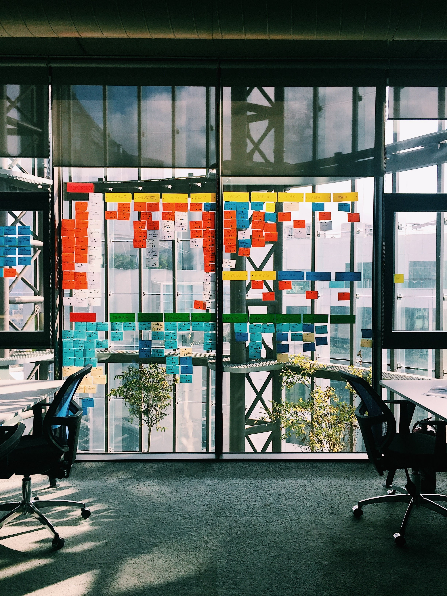

<div class="teacher-place-profile-main bg-white">
    <div id="teacher-place-image-profile">
        
    </div>

    <!-- Teacher place relevant informations -->
    <div class="bg-white p-3 d-flex justify-content-between" [style.width.%]="96">
        <div id="teacher-place-information">
            <div class="relevant-text-title-lg">
                <span matTooltip="AP12020"> Turma de Algoritmo e Programação</span>
            </div>
            <div class="irrelevant-text-xm relevant-text-principal">
                <span>Algoritmo e Programação</span>
            </div>
            <div>
                <a href="#" class="badge badge-secondary">Prof. Alberto Mateus </a>
            </div>
        </div>
        <div >
            <button class="b-0" mat-flat-button color="primary">
                Matricular-se
            </button>
        </div>
    </div>

    <!-- To navigate across the vary sections of teacher-place profile -->
    <div class="navigation-actions">
        <ul>
            <li>
                <a class="nav-action text-desabled" routerLink="/teacherPlace/profile" routerLinkActive="nav-action-selected">
                    <span> AULAS</span>
                </a>
            </li>
            <li>
                <a class="nav-action text-desabled" routerLink="/teacherPlace/profile/materials"
                    routerLinkActive="nav-action-selected">
                    <span> MATERIAIS</span>
                </a>
            </li>
            <li>
                <a class="nav-action text-desabled" routerLink="/teacherPlace/profile/mensages"
                    routerLinkActive="nav-action-selected">
                    <span> MENSAGENS</span>
                </a>
            </li>
            <li>
                <a>
                    <mat-form-field floatLabel="never">
                        <button mat-icon-button matSuffix [style.fontSize.rem]="1.4">
                            <mat-icon>
                                search
                            </mat-icon>
                        </button>

                        <input matInput type="text" placeholder="Pesquisar" color="accent">
                    </mat-form-field>
                </a>
            </li>
        </ul>
    </div>
    <div class="w-100 bg-lighter">
        <router-outlet></router-outlet>
    </div>
</div>